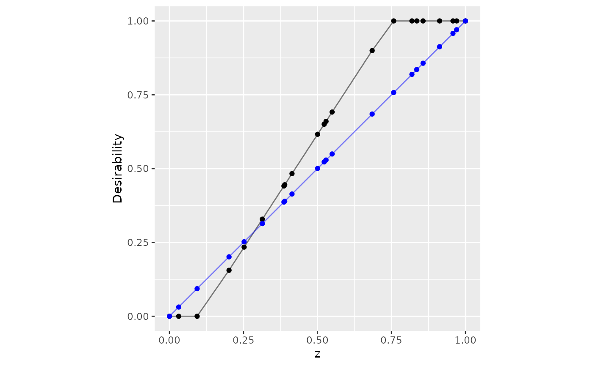
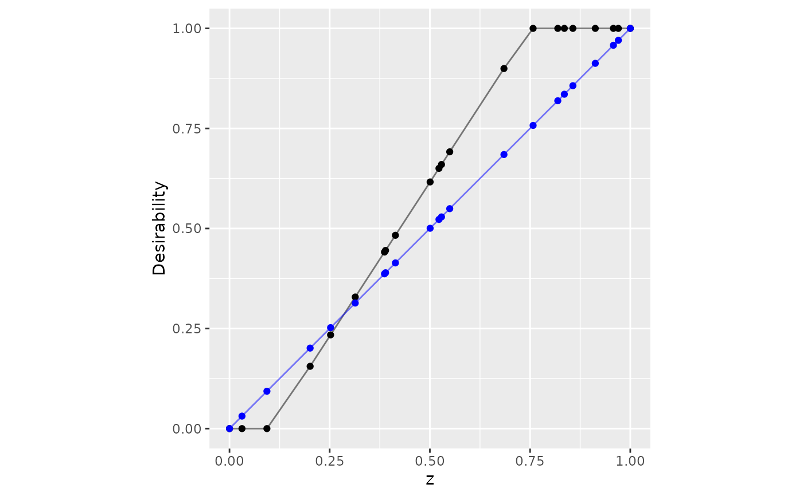

Desirability functions map some input to a [0, 1] scale where zero is
unacceptable and one is most desirable. The mapping depends on the situation.
For example, d_max() increases desirability with the input while d_min()
does the opposite. See the plots in the examples to see more examples.
Currently, only the desirability functions defined by Derringer and Suich (1980) are implemented.
Usage
d_max(x, low, high, scale = 1, missing = NA_real_, use_data = FALSE)
d_min(x, low, high, scale = 1, missing = NA_real_, use_data = FALSE)
d_target(
x,
low,
target,
high,
scale_low = 1,
scale_high = 1,
missing = NA_real_,
use_data = FALSE
)
d_box(x, low, high, missing = NA_real_, use_data = FALSE)
d_custom(x, x_vals, desirability, missing = NA_real_)
d_category(x, categories, missing = NA_real_)Arguments
- x
A vector of data to compute the desirability function
- low, high, target
Single numeric values that define the active ranges of desirability.
- scale, scale_low, scale_high
A single numeric value to rescale the desirability function (each should be great than 0.0). Values >1.0 make the desirability more difficult to satisfy while smaller values make it easier (see the examples below).
scale_lowandscale_highdo the same for target functions withscale_lowaffecting the range below thetargetvalue andscale_highaffecting values greater thantarget.- missing
A single numeric value on
[0, 1](orNA_real_) that defines how missing values inxare mapped to the desirability score.- use_data
Should the low, middle, and/or high values be derived from the data (
x) using the minimum, maximum, or median (respectively)?- x_vals, desirability
Numeric vectors of the same length that define the desirability results at specific values of
x. Values below and above the data inx_valsare given values of zero and one, respectively.- categories
A named list of desirability values that match all possible categories to specific desirability values. Data that are not included in
categoriesare given the value inmissing.
Details
Each function translates the values to desirability on [0, 1].
Equations
Maximization
data > high: d = 1.0data < low: d = 0.0low <= data <= high: \(d = \left(\frac{data-low}{high-low}\right)^{scale}\)
Minimization
data > high: d = 0.0data < low: d = 1.0low <= data <= high: \(d = \left(\frac{data = low}{low - high}\right)^{scale}\)
Data-Based Values
By default, most of the d_*() functions require specific user inputs for
arguments such as low, target and high. When use_data = TRUE, the
functions can use the minimum, median, and maximum values of the existing
data to estimate those values (respectively) but only when users do not
specify them.
References
Derringer, G. and Suich, R. (1980), Simultaneous Optimization of Several Response Variables. Journal of Quality Technology, 12, 214-219.
Examples
library(dplyr)
library(ggplot2)
set.seed(1)
dat <- tibble(x = sort(runif(30)), y = sort(runif(30)))
d_max(dat$x[1:10], 0.1, 0.75)
#> [1] 0.00000000 0.00000000 0.03931553 0.11777962 0.15643374 0.16303781
#> [7] 0.17252696 0.25462871 0.25726257 0.36976769
dat %>%
mutate(d_x = d_max(x, 0.1, 0.75))
#> # A tibble: 30 × 3
#> x y d_x
#> <dbl> <dbl> <dbl>
#> 1 0.0134 0.0233 0
#> 2 0.0618 0.0707 0
#> 3 0.126 0.0995 0.0393
#> 4 0.177 0.108 0.118
#> 5 0.202 0.186 0.156
#> 6 0.206 0.245 0.163
#> 7 0.212 0.316 0.173
#> 8 0.266 0.407 0.255
#> 9 0.267 0.411 0.257
#> 10 0.340 0.438 0.370
#> # ℹ 20 more rows
set.seed(2)
tibble(z = sort(runif(100))) %>%
mutate(
no_scale = d_max(z, 0.1, 0.75),
easier = d_max(z, 0.1, 0.75, scale = 1/2)
) %>%
ggplot(aes(x = z)) +
geom_point(aes(y = no_scale)) +
geom_line(aes(y = no_scale), alpha = .5) +
geom_point(aes(y = easier), col = "blue") +
geom_line(aes(y = easier), col = "blue", alpha = .5) +
lims(x = 0:1, y = 0:1) +
coord_fixed() +
ylab("Desirability")
 # ------------------------------------------------------------------------------
# Target example
dat %>%
mutate(
triangle = d_target(x, 0.1, 0.5, 0.9, scale_low = 2, scale_high = 1/2)
) %>%
ggplot(aes(x = x, y = triangle)) +
geom_point() +
geom_line(alpha = .5) +
lims(x = 0:1, y = 0:1) +
coord_fixed() +
ylab("Desirability")
# ------------------------------------------------------------------------------
# Target example
dat %>%
mutate(
triangle = d_target(x, 0.1, 0.5, 0.9, scale_low = 2, scale_high = 1/2)
) %>%
ggplot(aes(x = x, y = triangle)) +
geom_point() +
geom_line(alpha = .5) +
lims(x = 0:1, y = 0:1) +
coord_fixed() +
ylab("Desirability")
 # ------------------------------------------------------------------------------
# Box constraints
dat %>%
mutate(box = d_box(x, 1/4, 3/4)) %>%
ggplot(aes(x = x, y = box)) +
geom_point() +
geom_line(alpha = .5) +
lims(x = 0:1, y = 0:1) +
coord_fixed() +
ylab("Desirability")
# ------------------------------------------------------------------------------
# Box constraints
dat %>%
mutate(box = d_box(x, 1/4, 3/4)) %>%
ggplot(aes(x = x, y = box)) +
geom_point() +
geom_line(alpha = .5) +
lims(x = 0:1, y = 0:1) +
coord_fixed() +
ylab("Desirability")
 # ------------------------------------------------------------------------------
# Custom function
v_x <- seq(0, 1, length.out = 20)
v_d <- 1 - exp(-10 * abs(v_x - .5))
dat %>%
mutate(v = d_custom(x, v_x, v_d)) %>%
ggplot(aes(x = x, y = v)) +
geom_point() +
geom_line(alpha = .5) +
lims(x = 0:1, y = 0:1) +
coord_fixed() +
ylab("Desirability")
# ------------------------------------------------------------------------------
# Custom function
v_x <- seq(0, 1, length.out = 20)
v_d <- 1 - exp(-10 * abs(v_x - .5))
dat %>%
mutate(v = d_custom(x, v_x, v_d)) %>%
ggplot(aes(x = x, y = v)) +
geom_point() +
geom_line(alpha = .5) +
lims(x = 0:1, y = 0:1) +
coord_fixed() +
ylab("Desirability")
 # ------------------------------------------------------------------------------
# Qualitative data
set.seed(3)
groups <- sort(runif(10))
names(groups) <- letters[1:10]
tibble(x = letters[1:7]) %>%
mutate(d = d_category(x, groups)) %>%
ggplot(aes(x = x, y = d)) +
geom_bar(stat = "identity") +
lims(y = 0:1) +
ylab("Desirability")
# ------------------------------------------------------------------------------
# Qualitative data
set.seed(3)
groups <- sort(runif(10))
names(groups) <- letters[1:10]
tibble(x = letters[1:7]) %>%
mutate(d = d_category(x, groups)) %>%
ggplot(aes(x = x, y = d)) +
geom_bar(stat = "identity") +
lims(y = 0:1) +
ylab("Desirability")
 # ------------------------------------------------------------------------------
# Apply the same function to many columns at once (dplyr > 1.0)
dat %>%
mutate(across(c(everything()), ~ d_min(., .2, .6), .names = "d_{col}"))
#> # A tibble: 30 × 4
#> x y d_x d_y
#> <dbl> <dbl> <dbl> <dbl>
#> 1 0.0134 0.0233 1 1
#> 2 0.0618 0.0707 1 1
#> 3 0.126 0.0995 1 1
#> 4 0.177 0.108 1 1
#> 5 0.202 0.186 0.996 1
#> 6 0.206 0.245 0.985 0.888
#> 7 0.212 0.316 0.970 0.709
#> 8 0.266 0.407 0.836 0.483
#> 9 0.267 0.411 0.832 0.472
#> 10 0.340 0.438 0.649 0.405
#> # ℹ 20 more rows
# ------------------------------------------------------------------------------
# Using current data
set.seed(9015)
tibble(z = c(0, sort(runif(20)), 1)) %>%
mutate(
user_specified = d_max(z, 0.1, 0.75),
data_driven = d_max(z, use_data = TRUE)
) %>%
ggplot(aes(x = z)) +
geom_point(aes(y = user_specified)) +
geom_line(aes(y = user_specified), alpha = .5) +
geom_point(aes(y = data_driven), col = "blue") +
geom_line(aes(y = data_driven), col = "blue", alpha = .5) +
lims(x = 0:1, y = 0:1) +
coord_fixed() +
ylab("Desirability")

# ------------------------------------------------------------------------------
# Apply the same function to many columns at once (dplyr > 1.0)
dat %>%
mutate(across(c(everything()), ~ d_min(., .2, .6), .names = "d_{col}"))
#> # A tibble: 30 × 4
#> x y d_x d_y
#> <dbl> <dbl> <dbl> <dbl>
#> 1 0.0134 0.0233 1 1
#> 2 0.0618 0.0707 1 1
#> 3 0.126 0.0995 1 1
#> 4 0.177 0.108 1 1
#> 5 0.202 0.186 0.996 1
#> 6 0.206 0.245 0.985 0.888
#> 7 0.212 0.316 0.970 0.709
#> 8 0.266 0.407 0.836 0.483
#> 9 0.267 0.411 0.832 0.472
#> 10 0.340 0.438 0.649 0.405
#> # ℹ 20 more rows
# ------------------------------------------------------------------------------
# Using current data
set.seed(9015)
tibble(z = c(0, sort(runif(20)), 1)) %>%
mutate(
user_specified = d_max(z, 0.1, 0.75),
data_driven = d_max(z, use_data = TRUE)
) %>%
ggplot(aes(x = z)) +
geom_point(aes(y = user_specified)) +
geom_line(aes(y = user_specified), alpha = .5) +
geom_point(aes(y = data_driven), col = "blue") +
geom_line(aes(y = data_driven), col = "blue", alpha = .5) +
lims(x = 0:1, y = 0:1) +
coord_fixed() +
ylab("Desirability")
